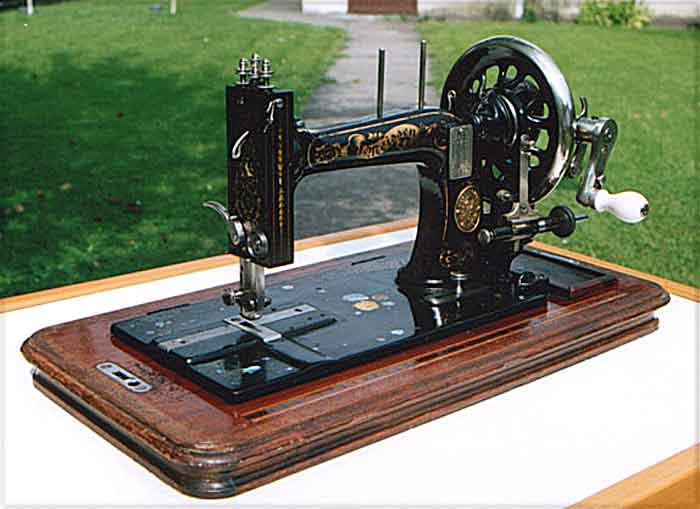
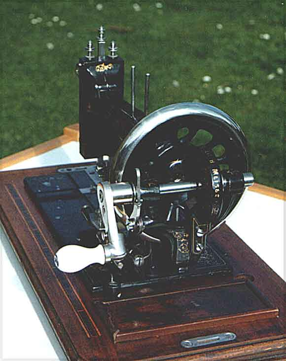

Biesolt & Locke, Meissen, Saxony
Model: Lit B
Serial #285400
Front View / Handcrank
Pictures courtesy of Ludger Halbur
Front View

Handcrank

©
Alan Quinn 2002 All Rights Reserved
This page may not be reproduced or distributed in part or in whole without the prior written permission of the copyright owner